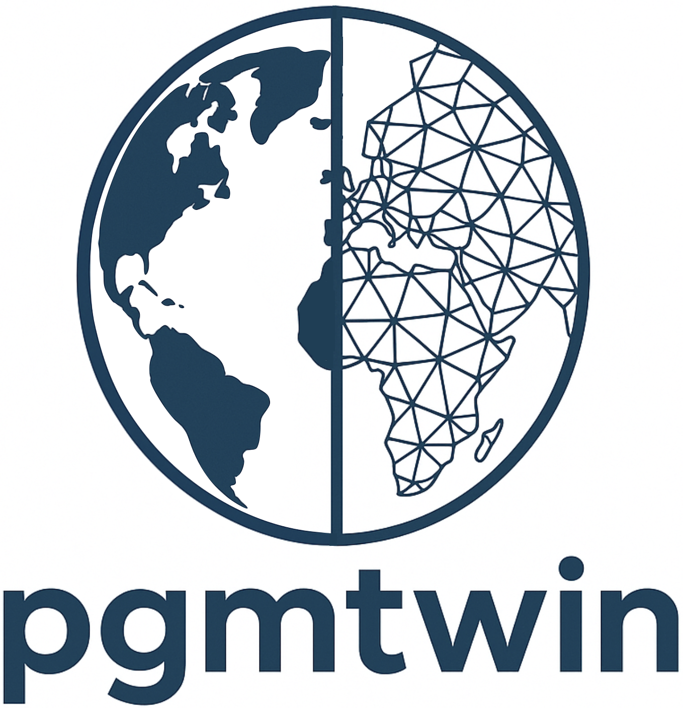
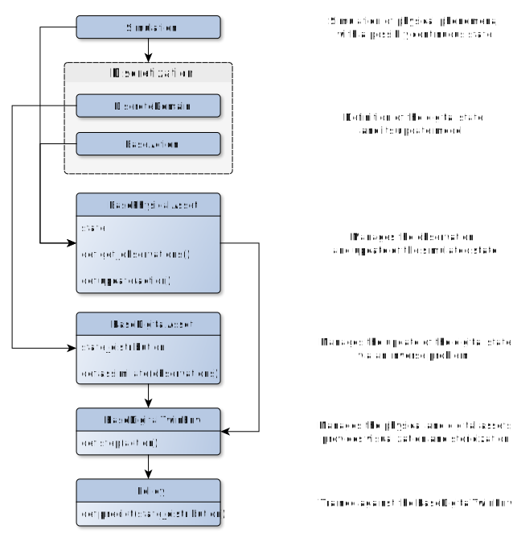

Welcome to pgmtwin’s documentation!¶
{kind=link}
pgmtwin is a Python library for building, simulating, and analyzing digital twins.
We provide wrappers and algorithms to help a user set up the a loop of
simulation of a physical asset, whose state might not be directly available to other components
update of a digital asset’s state, according to the results of an inverse problem on the physical asset’s observable features
evaluation of a policy to select the action to apply to the physical asset
{kind=link}
The following image represents the workflow for the development of a new digital twin system using pgmtwin. Please refer to the tutorial notebooks and examples for implementation references.
{kind=link}
We assume that the user provides a simulation for the evolution of the physical asset’s state, triggered by an action and able to generate observations.
A first step is thus the definition of the (possibly specialized)
BaseActions and a
DiscreteDomain for the digital asset’s state
which should mirror the physical asset’s. At the moment, pgmtwin only supports discrete domains for the digital asset.
The final implementation task is the inverse problem to transform a set of observations of the physical asset into a probability distribution of the digital asset’s state.
At this point, the BasePhysicalAsset
and BaseDigitalAsset classes can be extended
to wrap the simulation and inverse problem procedures, and
a new BaseDigitalTwinEnv can be created to manage
the simulation.
The BaseDigitalTwinEnv extends the Env class
from gymnasium, enabling compatibility with policy training
frameworks such as stable-baselines3.
pgmtwin also provides some domain-specific implementations in the toolkits module. For example, the Structural Health Monitoring module shm provides a
custom SingleDamageDomain
, MaintenanceAction
and DigitalTwinEnv
to recreate the setup in the
paper A digital twin framework for civil engineering structures
Get started by exploring the API documentation: